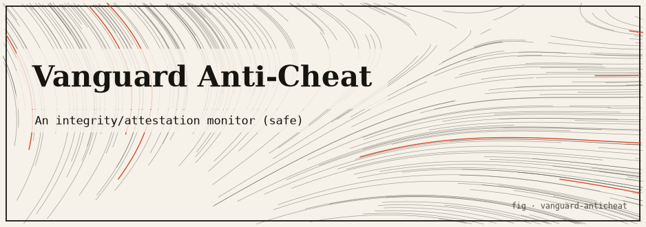

How Anti-Cheat Software Works (the Honest, Userspace Parts)
The honest subset of a game anti-cheat, entirely in safe userspace over a sandbox it creates and owns — memory integrity checks and process attestation, no kernel drivers.

The idea
Anti-cheat software has a reputation for being mysterious — partly because the most talked-about systems (including Riot’s Vanguard) ship a kernel-mode driver, which is both powerful and controversial. But a large share of what anti-cheat actually does is not kernel magic at all: it is ordinary integrity checking, pattern matching, and identity verification that runs perfectly well in userspace. This project implements exactly that honest subset in Rust, so you can watch the legitimate techniques work without any of the invasive parts.
The sandbox owns a simulated game state in memory. A separate “cheat” process — also in-memory, also spawned by the tool — attempts to modify that state without going through the legitimate API. The anti-cheat catches it with periodic integrity hashes and flags the offender. Everything happens inside a sandbox the program creates and owns; nothing on your real machine is inspected.
Honest caveat: this is deliberately the userspace-only subset. There is no kernel driver and no rootkit-style hooking, so it cannot see or stop a cheat that runs at equal or higher privilege — which is precisely why real production anti-cheat reaches for a kernel driver. Treat this as an educational model of the honest techniques, not a shippable anti-cheat.
The honest techniques, explained
Integrity checking is the workhorse. The anti-cheat picks the memory or files it wants to protect and periodically computes a cryptographic hash (here, SHA-256) over them. It keeps a known-good baseline; if anything changes the protected bytes outside the sanctioned code paths, the recomputed hash stops matching and the tamper is detected. This is the same principle behind file-checksum verification and secure-boot measurement, applied to live game state.
Signature and heuristic detection are two complementary ways to decide what counts as cheating. Signature detection looks for known-bad artefacts — a specific byte pattern, a module name, or a file hash that belongs to a catalogued cheat. It is precise but only catches cheats it already knows. Heuristic detection instead flags suspicious behaviour: a health value that jumps impossibly, a position that teleports, or a stat that changes faster than the rules permit. Heuristics can catch novel cheats but risk false positives, so they are usually tuned conservatively.
Process attestation answers a different question: is the thing talking to the game really the legitimate client? A challenge–response protocol has each process prove it holds a secret without revealing it — the anti-cheat sends a challenge, and only a process with the right token can produce the correct response. This is the same idea that underlies authentication handshakes and hardware attestation.
How this project demonstrates it
- Game state is a struct in in-process memory (not a real shared-memory segment). The anti-cheat takes a SHA-256 hash of the state every N ticks and compares it to the baseline.
- Legitimate mutations go through a typed API that re-hashes after each write, so the baseline always tracks sanctioned changes.
- A simulated cheat thread mutates the backing memory directly, bypassing the API. The anti-cheat detects the hash mismatch on the very next tick — integrity checking in action.
- Process attestation: each simulated process holds a secret token; the anti-cheat issues a challenge and a correct response proves the process is legitimate, while the cheat thread fails and has its attestation revoked.
#![forbid(unsafe_code)]— the anti-cheat itself contains no unsafe code, keeping the demonstration entirely in safe userspace Rust.
Anti-cheat questions
How does anti-cheat detect memory tampering?
A common technique is integrity checking: the anti-cheat periodically hashes the memory or files it protects and compares the result to a known-good baseline. If a cheat writes to that memory outside the legitimate code paths, the next hash no longer matches and the tampering is flagged.
What is signature versus heuristic detection?
Signature detection looks for known-bad patterns — a specific byte sequence or file hash belonging to a catalogued cheat. Heuristic detection instead looks for suspicious behaviour, such as an impossible change in game state, so it can catch cheats it has never seen before, at the cost of more false positives.
Why can’t this catch every cheat?
Because it stays entirely in userspace. Real production anti-cheat often ships a kernel-mode driver so it can observe the system from a level cheats cannot easily reach. This project implements only the honest userspace subset — no kernel driver, no rootkit — so a cheat with equal or higher privilege can still evade it.
Run it
git clone https://github.com/caelum0x/awesome-mad-projects.git cd vanguard-anticheat cargo test cargo run # Game state hash: a3f7c29e... (tick 0) # [cheat-thread] bypassed API, mutated health: 100 → 9999 # Tick 1 integrity check: FAILED ← detected # Process flagged: cheat-thread (attestation revoked)